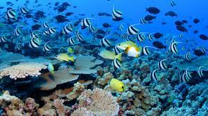

Coral Reefs
October 2, 2023 by Keshawn
A coral reef is an underwater ecosystem characterized by reef-building corals. Reefs are formed of colonies of coral polyps held together by calcium carbonate.[1] Most coral reefs are built from stony corals, whose polyps cluster in groups. Coral belongs to the class Anthozoa in the animal phylum Cnidaria, which includes sea anemones and jellyfish. Unlike sea anemones, corals secrete hard carbonate exoskeletons that support and protect the coral. Most reefs grow best in warm, shallow, clear, sunny and agitated water. Coral reefs first appeared 485 million years ago, at the dawn of the Early Ordovician, displacing the microbial and sponge reefs of the Cambrian.[2] Sometimes called rainforests of the sea,[3] shallow coral reefs form some of Earth's most diverse ecosystems. They occupy less than 0.1% of the world's ocean area, about half the area of France, yet they provide a home for at least 25% of all marine species,[4][5][6][7] including fish, mollusks, worms, crustaceans, echinoderms, sponges, tunicates and other cnidarians.[8] Coral reefs flourish in ocean waters that provide few nutrients. They are most commonly found at shallow depths in tropical waters, but deep water and cold water coral reefs exist on smaller scales in other areas.